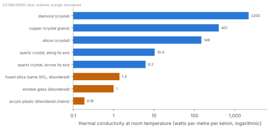
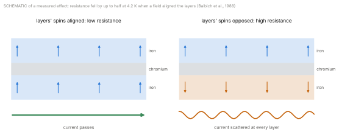

Library › The Unified Framework for the Graviton Pressure Theory
Graviton Corridors
How Structure Directs Medium Flow Inside Matter
Watch the Deep Dive on this part
About This Paper
Part 19 built matter from knots of the medium, and Part 20 described its order: levels of order, each held by patterns locked in step through the medium, and each lost when knocks outpace the locking.12 This paper goes inside. Things flow through matter all the time: the medium itself, the weight a body passes to whatever holds it up, heat, electric charge, waves, and the alignment of spins. Each flow follows paths, and the paths are set by structure. The first edition called such paths graviton corridors, and its central question was the right one: how does structure direct flow? Much of the answer has since been measured, often in the first edition’s own terms. Every one of these flows is the medium in motion, either the medium itself or patterns of it. This paper sets out what flows, what carries each flow, what directs it, and what is still open.
The first edition’s engineering and second-register sections are removed; the list at the end says what was removed and why. The graviton is in Part 15, the field in Part 16, mass in Part 17 and time in Part 18.3456 Claims are marked by their status, as the key shows.
What Flows Inside Matter
The total of the first is fixed; its distribution may not be. [Argued] The total delivery of the medium to a body tracks its energy, whatever its composition or structure, as tested to one part in \(10^{15}\) (Part 15). So no arrangement of matter changes how much it weighs, beyond the energy it holds. Where inside the body the delivery lands is untested, and it is the open question this paper ends on (Section “The Through-Flow”). For the other five flows the paths are measured, and in every case they are set by order.
What a Corridor Is
The first edition required three things of a corridor: temporal synchronisation, oscillations in step with the medium’s rhythm; spin alignment, particles locked in a common spin or phase; and coherent phase delay, timing held across boundaries. It added a fourth idea that turns out to be central: “each moment of stable graviton flow through a corridor is refreshed by coherent disappearance and replenishment. The corridor does not merely transmit pressure; it perpetually recreates its channel.”
The first edition’s list of what breaks a corridor is the measured list of what scatters flow in matter [Argued]: heat (“noise drowns phase”), stress and deformation (“deformed symmetry births timing flaws”), disorder (“amorphous materials… disrupt phase continuity”), and disordered spins (“spin scatter”). The sections that follow give the measurements, flow by flow.
Load: The Normal Force as Momentum Passed On
Every part of this is measured.
The bonds shorten. A table compresses under a book by a few nanometres; a steel column under a building, by millimetres. The shortening is proportional to the load, Hooke’s law, and its constant is the stiffness of the bonds.
The load takes time to pass. Stress travels through a material at its speed of sound, about 5,900 metres a second in steel, not instantly. A Slinky held from its top and released shows it plainly: its bottom stays where it was, hanging in mid-air, until the change in tension travelling down the spring reaches it.7 In GPT the delay is the inertia of each pattern: the medium’s exchanges cross each bond at \(c\), but each atom’s pattern must be moved before it presses on the next. [Hypothesis]
The load follows paths set by structure. Pile discs of a material that changes how it passes light under stress, light them from behind through polarising filters, and the weight is seen running through the pile along branching chains, while many discs carry almost nothing.8 In a tall silo the grain turns much of its weight sideways into the walls, so that the pressure at the bottom stops growing however high the grain is piled (Janssen, 1895).9
The surfaces touch at points. Two flat metal surfaces pressed together touch over a very small fraction of the area they seem to share, as little as a ten-thousandth under light loads; the whole load passes through the tips of their roughness.10
These are corridors of load, measured. [Argued] The first edition’s claim that structure channels pressure is true of the load a body passes on, and the force chains are its plainest picture. They show that how a load is passed depends on the arrangement, not on the substance: identical discs carry it along a few paths or many, depending only on how they are packed.
Heat and Charge: Transport Set by Order

Order decides how well matter carries heat [Argued] (Figure 1). Diamond carries heat about two thousand times better than glass. Crystalline quartz carries it six to ten times better than fused silica, which is the same substance with its order removed, and better along its axis than across it. The first edition ranked materials by an invented “compatibility index”: diamond 0.91, quartz 0.82, iron 0.74, glass 0.31. The numbers were invented, but the ranking is the measured ranking of how well they carry heat.
Order decides how well matter carries charge. [Argued] In a perfect crystal at low temperature, electrons travel enormous distances without being scattered. The resistance of a metal has two measured parts, as Matthiessen found in 1864: one from impurities and defects, which stays at the lowest temperatures, and one from the vibration of the lattice, which grows with temperature.11 Very pure copper at 4 kelvin conducts thousands of times better than at room temperature; bent or hammered copper conducts a few per cent worse than annealed copper, because deformation adds defects. The first edition’s list of what breaks a corridor, heat, stress and disorder, is Matthiessen’s rule.
Heat and charge in a metal follow the same paths. [Argued] Wiedemann and Franz found in 1853 that for metals the ratio of how well they carry heat to how well they carry charge is the same, rising in proportion to temperature.12 In metals the same electron patterns carry both, along the same lines of order.
Lattices and Waves
A lattice redirects a wave only when its spacing matches the wave. [Argued] X-rays striking a crystal are reflected only at angles where the spacing \(d\) of its planes and the wavelength \(\lambda\) satisfy \begin{equation}2d\sin\theta = n\lambda, \label{eq:bragg}\end{equation} for a whole number \(n\) (W. L. Bragg, 1913).13 Electrons and neutrons are reflected by the same rule; electrons striking a nickel crystal were found to do so in 1927, which showed that a moving particle has a wavelength.14 In GPT the rule is spatial phase [Hypothesis] (Part 19): each plane of patterns re-emits what reaches it, and the re-emissions from successive planes add only where they arrive in step. The electron’s diffraction is its guiding pattern meeting the lattice. The first edition’s “wavelength match” as a condition of resonance is this rule.
Structured lattices filter and steer waves. [Argued] A lattice built at the scale of a wave’s length can forbid a whole band of wavelengths from travelling through it, while passing others; for light these are photonic crystals, first proposed in 1987,15 and the colours of opals and of some butterflies’ wings come from natural ones. Built lattices of the same kind block or steer sound. The first edition’s lattice resonance, with its “filtering”, “focusing” and “redirection”, exists, measured, for light and sound. It does not exist for the total pull of gravity, which no structure changes (Section “What Flows Inside Matter”).
Particles fired along a crystal’s planes travel far deeper than particles fired at random angles. [Argued] The effect, called channelling, was predicted and measured in 1963.16 A charged particle entering between two planes of atoms is steered back toward the middle each time it approaches one, and travels down the open lane. These are corridors in the most literal sense: open lanes through a lattice along which a flow passes with little loss, and which close when the crystal is tilted away from them.
Stress and Deformation
A crystal yields one row at a time. [Argued] A perfect crystal sheared as a whole would need forces thousands of times larger than real metals need. In 1934 Taylor, Orowan and Polanyi independently proposed why: a crystal contains lines along which the arrangement is out of step, called dislocations, and it deforms by moving these lines, re-locking one row of atoms at a time.17 Dislocations were seen directly in 1956.18 Crystals grown nearly free of them, thin whiskers, approach the strength of the perfect lattice.19
In GPT a dislocation is a line where the common phase of the lattice is broken [Hypothesis], and its movement is the lock passing from row to row. It explains the first edition’s “stress births timing flaws” in measured form. Hammering a metal multiplies its dislocations; they tangle and pin one another, so the metal becomes harder; and they scatter both heat and charge, so it carries both a little worse. Heating it lets the arrangement re-lock, annealing, and its softness and conductivity return. Grain boundaries, where crystals of different orientation meet, scatter in the same way, which is why a single crystal carries heat and charge better than the same metal made of many small grains.
Spin: Structure That Directs Flow
Spin is part of a body’s structure, and an important one. In GPT spin is the axis and sense of a knot’s circulation [Hypothesis] (Part 19), and it shapes every level of interior structure that this paper and the last have described:
patterns of the same circulation push each other out of one place (exclusion), which gives matter its hardness and its shells (Part 19);
two electrons of opposite circulation share a bond (Part 19);
aligned across a crystal, circulations make a magnet, with its own lock separate from the lattice’s (Part 20).
Spin is real rotation, exchanged with the body that holds it [Argued]: magnetising an iron rod makes it turn, and turning it magnetises it (Einstein and de Haas; Barnett; Part 20).

Spin alignment directs the flow of charge. [Argued] In 1988 Albert Fert’s group, and independently Peter Grünberg’s in 1989, built stacks of iron layers a few atoms thick separated by chromium, in which neighbouring iron layers naturally point their spins in opposite directions. A magnetic field that turned the layers into alignment lowered the stack’s electrical resistance by up to half at 4.2 kelvin (Figure 2).2021 Electrons of one spin pass a layer more easily than those of the other, according to the layer’s alignment: with the layers aligned, one kind of electron passes all of them; with them opposed, every electron is scattered in one layer or the other. The standard account describes this by counting the states each spin finds open in each layer, which is a count, not a mechanism. In GPT it is the relay described below: a pattern whose circulation suits the layer’s alignment meets each atom in step, and one whose circulation does not is scattered. [Hypothesis] The effect, giant magnetoresistance, is how the read heads of hard drives detected their data for two decades. The alignment of spins is a structure that directs flow, and it is measured. [Argued]
Spin alignment directs the flow of heat. [Argued] A disturbance of the alignment in a magnet travels through it as a wave, a spin wave, and spin waves carry heat and can be driven by it: a temperature difference across a magnet drives a flow of spin alignment along it.22
What sets whether neighbouring spins lock in step is spacing. [Argued] The measured rule, summarised in the Bethe–Slater curve, is that whether neighbouring atoms’ spins align or oppose depends on the distance between the atoms compared with the size of their partly filled electron shells: iron, cobalt and nickel fall on the aligning side, manganese and chromium on the opposing side.23 Change the spacing and the lock changes: Heusler found in 1903 that an alloy of copper, manganese and aluminium is strongly magnetic, though none of the three is magnetic alone; in the alloy the manganese atoms sit farther apart.24 Whether the spacing sets the relay’s timing is open. [Open] In one turn of the electron’s rhythm the medium travels \(h/m_ec = 2.4\times10^{-12}\) metres; iron’s neighbours are about a hundred of those apart. If the relay needs one knot’s output to arrive in step at the next, the spacing measured in turns may be what the Bethe–Slater curve records.
The Through-Flow
This is the core of the first edition’s corridor, kept with the constraint that measurement places on it. It predicts nothing for weight, and everything it predicts is inside:
Same substance, two orders. Crystalline quartz and fused silica of equal mass weigh the same, to the limit of the best balances; GPT predicts no difference in the total. Whether their centres of gravity sit exactly at their centres of mass is untested.
One crystal, turned. A single crystal on a torsion balance, turned through its orientations, would show any shift of its centre of gravity along its axes as a twist that follows the orientation. This test is shared with Part 29.25
One crystal, aligned and not. The same test on a magnetic crystal above and below its Curie point asks whether the relay of spin directs the delivery.
A null result in all of these would mean the through-flow is spread by structure no differently from the mass itself [Argued], and the corridors of this paper would be corridors of load, heat, charge, waves and spin only. That would still be the first edition’s question answered: structure directs flow.
What Remains to Be Derived
Whether the medium’s through-flow inside a body follows the lines of order, and by how much. [Open]
The timing condition for the relay of spin between neighbours, and whether the spacing in turns of the electron’s rhythm is what the Bethe–Slater curve records. [Open]
The stiffness of a bond, and so the speed of sound in a material, from the exchanges through the medium that keep the bond up. [Open]
The scattering of an electron’s pattern by a displaced atom, as a number: the resistance of a metal from its disorder and its temperature. [Open]
Why heat and charge in metals keep the fixed ratio Wiedemann and Franz found, in terms of the electron patterns that carry both. [Open]
Conclusion
Things flow through matter: the medium itself, the load a body passes to its support, heat, charge, waves and the alignment of spins. Every one is carried by patterns of the medium, and every one whose paths can be measured passes most freely where the patterns are regular, aligned and in step, and is scattered where they are not. A corridor is a line of patterns held in step and re-made on every turn. The normal force is delivered momentum passed through bonds, along paths that structure sets; heat is knocks passed in step; charge passes freely through an arrangement it meets in step; a lattice redirects a wave only where its spacing matches; a crystal yields one row at a time; and spin, the axis of a knot’s circulation, directs the flow of charge and heat, and may relay the medium itself with a timing set by spacing. The total weight of a body is fixed by its energy. Whether the medium inside it follows the corridors that every other flow follows is the question this paper leaves open, and the tests that would answer it.
Changes in the Second Edition
This list records what changed from the first edition and why. Changes to the argument alter what the paper claims or how it supports a claim; clarifications improve wording, sources or presentation and leave the argument as it was.
Changes to the argument
The corridor is kept and given its mechanism: a line of patterns held in step, re-made on every turn. The first edition’s “refresh by disappearance and replenishment” is identified as the turnover (Part 17).
New: an inventory of what flows inside matter (the medium’s through-flow, load, heat, charge, waves, spin), with what carries and what directs each.
New: the normal force as delivered momentum passed through bonds, with its measured features: compression, the speed of sound, force chains, the Janssen effect and the small real area of contact.
The first edition’s criteria for corridors and the things that break them are matched to measured transport: heat by order (crystal against glass), charge by order (Matthiessen’s rule), heat and charge together in metals (Wiedemann–Franz), waves by spacing (Bragg), band gaps, channelling, dislocations and grain boundaries.
Spin is given its own section: the axis and sense of a knot’s circulation, shaping exclusion, bonds and magnets, and measured to direct the flow of charge (giant magnetoresistance) and heat (spin waves). The first edition’s spin-directed corridors and their timing are restated as a relay through the turnover, with spacing (Bethe–Slater, Heusler alloys) as its measured control and its timing condition open.
Corridors changing weight, inertia or the “gravitational experience” of a body are withdrawn: total weight is fixed by energy, whatever the structure, to one part in \(10^{15}\). The through-flow is restated as possibly directed inside a body, with tests.
The scale of “\(10^{-15}\) m” for corridor wavelengths, the size of a nucleus, is replaced by the scales that matter: the spacing of atoms and the length of the electron’s rhythm.
Removed, as too far from the core: the applications of tunable lattices (field gates, inertial control surfaces, programmable matter); biological systems as graviton-responsive structure; graviton shielding as engineering (gravitational absorption by matter is bounded at about \(10^{-22}\) m\(^2\)/kg by lunar laser ranging,26 and the claimed weight loss above a spinning superconductor was not found on replication27); propulsion by corridor phase cycling; resonance events and the 432 Hz quartz experiment; programmable field devices; field-aware architecture; gravimetric logic and memory; and the Graviton Compatibility Index with its scores.
Clarifications
The title changes from Graviton Corridors and Lattice Resonance to Graviton Corridors, and the subtitle from Field Structuring and the Path to Gravitational Participation to How Structure Directs Medium Flow Inside Matter. This part was Part 20 in the first edition.
“Self-repulsive, massless gravitons”, “impedance” and “stability’s intent” are replaced by the terms of Parts 15 to 20.
“Coherence as Moral Geometry” and “Matter as Dialogue” are moved to the second register, beside Part 2.
Two figures, status marks and this list are added.